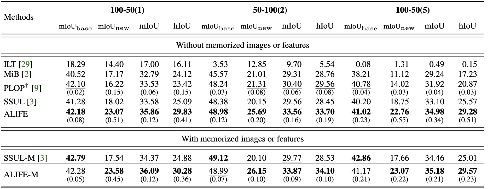

ALIFE: Adaptive Logit RegularIzer and Feature REplay
for Incremental Semantic Segmentation
NeurIPS 2022
Abstract
We address the problem of incremental semantic segmentation (ISS) recognizing novel object/stuff categories continually without forgetting previous ones that have been learned. The catastrophic forgetting problem is particularly severe in ISS, since pixel-level ground-truth labels are available only for the novel categories at training time. To address the problem, regularization-based methods exploit probability calibration techniques to learn semantic information from unlabeled pixels. While such techniques are effective, there is still a lack of theoretical understanding of them. Replay-based methods propose to memorize a small set of images for previous categories. They achieve state-of-the-art performance at the cost of large memory footprint. We propose in this paper a novel ISS method, dubbed ALIFE, that provides a better compromise between accuracy and efficiency. To this end, we first show an in-depth analysis on the calibration techniques to better understand the effects on ISS. Based on this, we then introduce an adaptive logit regularizer (ALI) that enables our model to better learn new categories, while retaining knowledge for previous ones. We also present a feature replay scheme that memorizes features, instead of images directly, in order to reduce memory requirements significantly. Since a feature extractor is changed continually, memorized features should also be updated at every incremental stage. To handle this, we introduce category-specific rotation matrices updating the features for each category separately. We demonstrate the effectiveness of our approach with extensive experiments on standard ISS benchmarks, and show that our method achieves a better trade-off in terms of accuracy and efficiency.
Results

Quantitative results on ADE20K in terms of IoU scores. SSUL-M uses a replay buffer that consists of 300 previously seen images together with corresponding ground-truth labels. Numbers in bold are the best performance, while underlined ones are the second best. We show standard deviations in parentheses. Numbers for other methods are taken from SSUL. †: Results are obtained by running the source codes provided by the authors.
We compare in this table our approach with state-of-the-art methods, including MiB, PLOP, and SSUL. Note that RECALL is not designed to handle stuff categories, and results on ADE20K are not available. From this table, we have three findings as follows: (1) Our approach exploiting the first step only, denoted by ALIFE, already outperforms all other methods in terms of both mIoU and hIoU scores by significant margins for all scenarios. This validates the effectiveness of our approach without memorizing features. In particular, we can see that ALIFE even outperforms SSUL-M that memorizes 300 images along with ground-truth labels for replaying. A plausible reason is that SSUL freezes a feature extractor, limiting the flexibility to deal with new categories. (2) ALIFE shows substantial IoU gains over MiB using CCE and CKD for all scenarios. This verifies that both CCE and CKD are not always helpful for ISS. ALI is free from the limitations of CCE and CKD, and it allows our model to better learn new categories without forgetting previous ones. (3) Our approach memorizing features, denoted by ALIFE-M, improves the performance over ALIFE in terms of all metrics for all scenarios. Note that SSUL-M even performs worse than SSUL for 100-50(1) and 100-50(6) cases. Considering that we rely on at least 9 times less memory requirements than SSUL-M for 100-50(1) and 50-100(2) cases, the gains from memorizing features are remarkable compared to those of SSUL-M over SSUL.
Paper

Acknowledgements
This work was supported by Institute of Information & Communications Technology Planing & Evaluation (IITP) grant funded by the Korea government (MSIT) (No.RS-2022-00143524, Development of Fundamental Technology and Integrated Solution for Next-Generation Automatic Artificial Intelligence System) and the Yonsei Signature Research Cluster Program of 2022 (2022-22-0002).